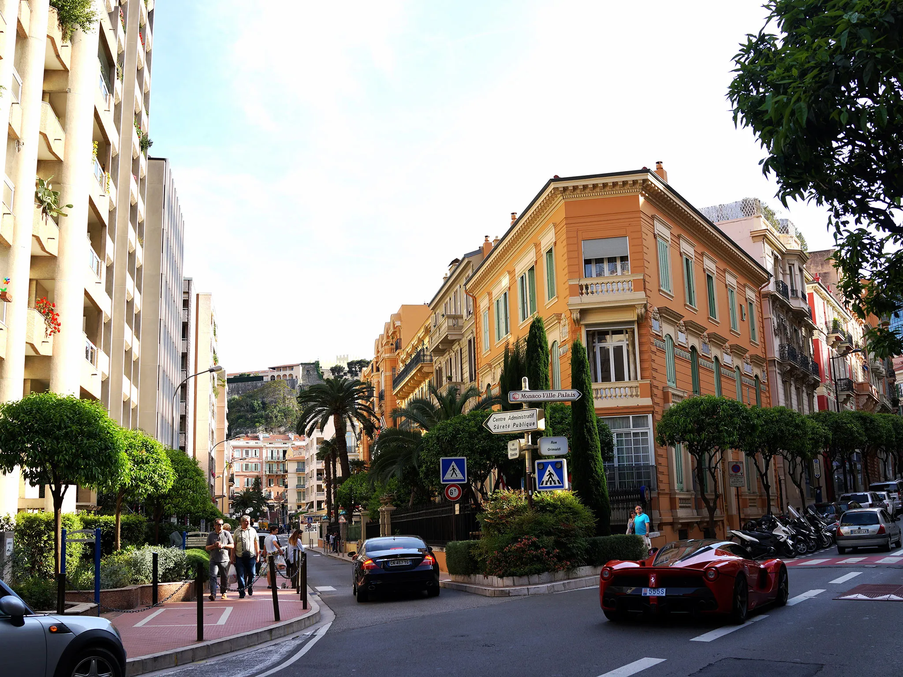

KÖZLEKEDÉS
Monacóban a közlekedés főként autóval történik, a városállam kis mérete miatt a gyaloglás is népszerű. Azonban a városban számos luxusautó és sportautó található, amelyek gyakran láthatók az utcákon. Emellett Monacóban van egy kis vasút, amely összeköti a város különböző részeit, valamint egy komp, amely a tengerparti területeket köti össze.

Monacói átlag utca
Monacóban a közlekedés általában zökkenőmentes, bár a városban gyakran előfordulnak forgalmi dugók, különösen a turisztikai szezonban. Azonban a városvezetőség folyamatosan dolgozik a közlekedési infrastruktúra fejlesztésén, hogy javítsa a közlekedési helyzetet és csökkentse a forgalmi dugókat.